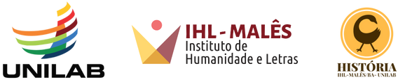

História da América: Colonização e Resistência
CCLHM0076 - 2025.2
![]()
| Código | Disciplina | CH | Dia | Horário | Sala |
|---|---|---|---|---|---|
| CCLHM0076 | História da América: Colonização e Resistência | 60h | 4ª | 14h-18h | ? |
Ementa
Formações sociais e políticas nas Américas antes do século XV: representações, história e historiografia. Invasões, contatos e conquistas nos séculos XV e XVI: história e historiografia. Formação das sociedades coloniais nas Américas: desigualdades e diferenças. Trabalho e tributo colonial: impactos na ordem social das sociedades autóctones. Embates e formas de negociação e resistência: historiografia. Escravidão e resistências nas sociedades coloniais sob domínio britânico, francês e espanhol. Tráfico atlântico e formação das Afro-Américas. O ensino de história e historiografia da América na escola básica.
Conteúdo Programático
Módulo I - Sociedades Autóctones das Américas
AULA 1 (31/07/2025)
Tema: Quais Américas? Apresentação e reflexões sobre a disciplina
Objetivos
- Apresentar o curso e estabelecer os combinados com a turma
- Discutir práticas de ensino relacionadas à história da América
- Debater conceitos referentes à disciplina: índio/indígena; América Latina
Leituras
- SILVA, K. V.; SILVA, M. H. Índio. in: Dicionário de conceitos históricos. São Paulo: Contexto, 2009.
- KRENAK, A. Paisagens, territórios e pressão colonial. Espaço Ameríndio, v. 9, n. 3, p. 327–327, 30 dez. 2015. DOI: 10.22456/1982-6524.61133. Link: https://seer.ufrgs.br/index.php/EspacoAmerindio/article/view/61133
AULA 2 (07/08/2025)
Tema: Como a Inteligência Artificial Generativa “vê” nossa disciplina
Objetivos
- Refletir sobre o uso de Inteligência Artificial Generativa no ensino de História
- Analisar as limitações e potencialidades da IA Generativa na construção do conhecimento histórico
Materiais de Apoio
- [EM BREVE]
AULA 3 (14/08/2025)
Tema: Sociedades autóctones americanas antes do século XVI
Objetivos
- Caracterizar a ocupação e a história do Caribe antes do século XV
- Analisar a formação socio-histórica da sociedade mexica
- Entender o debate historiográfico acerca da sociedade mexica
Leituras
- NARDI, Tawnne T. de A. “Mesoamérica, Mexicas e Tlapanecas.” In: O império mexica e a província de Tlapa. Relações políticas e tributárias nos códices mesoamericanos (1461-1521). São Paulo: Universidade de São Paulo, 30 set. 2019. pp. 25-54.
- MURRA, John. “As sociedades andinas anteriores a 1532”. In: História da América Latina: América Latina Colonial. BETHEL, Leslie (org.). São Paulo: Edusp, 2004, pp. 63-100.
AULA 4 (21/08/2025)
Tema: III Semana de História do IHL-Malês
Módulo II - Conquistas, Colonização e Resistências
AULA 5 (28/08/2025)
Tema: Expansão europeia nos séculos XV e XVI e a chegada na América
Objetivos
- Analisar os processos de expansão marítima europeia nos séc. XV e XVI
- Caracterizar a presença portuguesa na costa africana e as ambições espanholas
Leituras
- BOXER, Charles R. O império marítimo português, 1415-1825. São Paulo: Companhia das Letras, 2002.
AULA 6 (04/09/2025)
Tema: As várias visões da conquista
Objetivos
- Caracterizar as principais correntes historiográficas acerca da conquista europeia sobre as sociedades mexicas e incas (XVI).
- Analisar historicamente as relações entre invasores europeus e as variadas sociedades americanas na primeira metade do século XVI.
Leituras
- SANTOS, Eduardo Natalino dos. As conquistas de México-Tenochtitlan e da Nova Espanha. História Unisinos. Vol. 18 Nº 2 - 2014.
- Relatos Astecas da Conquista. Trechos selecionados.
AULA 7 (11/09/2025)
Tema: Formação da sociedade colonial espanhola (XVI-XVIII)
Objetivos
- Compreender o processo de constituição da sociedade colonial espanhola nas Américas entre os séculos XVI e XVIII
Leituras
- RAMINELLI, Ronald. “A monarquia católica e os poderes locais do Novo Mundo.” Simpósio Nacional de História, XXVI, São Paulo (2011): 1-26.
- STOLKE, V. O enigma das interseções: classe, “raça”, sexo, sexualidade: a formação dos impérios transatlânticos do século XVI ao XIX. Revista Estudos Feministas, v. 14, n. 1, p. 15–42, jan. 2006.
AULA 8 (18/09/2025)
Tema: Resistências, negociações e agência indígenas nos séculos XVI e XVII
Objetivos
- Caracterizar os variados aspectos das estratégias de resistência e agência histórica das sociedades americanas frente à dominação colonial nos séculos XVI e XVII.
Leituras
- BRUIT, Héctor. O visível e o invisível na Conquista hispânica da América. In: VAINFAS, Ronaldo (org.) América em tempo de conquista. Rio de Janeiro: Zahar Editor, 1992, pp. 77-87.
- MARTINS, F. P. Repressão e resistência nos Andes coloniais: o movimento Taki Onqoy. Métis: história & cultura, v. 16, n. 31, 11 set. 2017.
AULA 9 (25/09/2025)
Tema: Trabalho e tributo colonial: impactos na ordem social das sociedades autóctones
Objetivos
- Analisar as formas de trabalho e tributo nas sociedades coloniais espanholas
- Compreender os impactos do trabalho e tributo na ordem social das sociedades autóctones
Leituras
- ZAGALSKY, Paula Cecilia. O trabalho mineiro de Potosí nos mundos do trabalho indígena na América colonial hispânica, séculos XVI-XVII; Paco Editorial; 2022; 59-84
AULA 10 (02/10/2025)
Tema: Prova escrita presencial
Temas
- As várias visões da Conquista
- Resistências, negociação, agência: história e historiografia (XVI-XVII)
- Formação da sociedade colonial espanhola (XVI-XVIII)
Módulo III - Escravidão Africana nas Américas
AULA 11 (09/10/2025)
Tema: Tráfico transatlântico de africanos escravizados
Objetivos
- Analisar a historiografia do tráfico atlântico
Leituras
- FERREIRA, Roquinaldo; SEIJAS, Tatiana. O tráfico de escravos para a América: um balanço historiográfico. In: ANDREWS, George Reid; DE LA FUENTE, Alejandro (Orgs.). Estudos afro-latino-americanos : uma introdução. Buenos Aires: CLACSO, 2018, p. 47–74. Disponível em: http://biblioteca.clacso.edu.ar/clacso/se/20181206024023/EstudiosAfro_PT.pdf. Acesso em: 16 abr. 2019.
- WILLIAMS, Eric. Origens da escravidão negra. In: Capitalismo e escravidão. São Paulo: Companhia das Letras, 2012.
AULA 12 (16/10/2025)
Tema: A escravidão nas regiões Andina, Platina e Mexicana
Modalidade: Aula Remota
Objetivos
- Compreender as variadas formas de escravidão e as estratégias de resistência de escravizados no México, Peru e Rio da Prata.
Leituras
- CHAVEZ-HITA, Adriana Naveda. Presencia africana en Nueva España, un repasso historiográfico. In: GUTIÉRREZ, Duró (Org.). Poblaciones y Culturas de origen africano en México. México: Instituto Nacional de Antropologia e Historia, 2005.
- KLEIN, Herbert S. Los esclavos africanos. In: Historia General de La America Latina: Consolidación del Ordem Colonial. Paris: UNESCO; Editorial Trotta, 2007, v. 3.
- ROSAL, Miguel Ángel. La esclavitud en Buenos Aires y sus fuentes. 5º Encontro Escravidão e Liberdade no Brasil Meridional, Porto Alegre, 2011.
AULA 13 (23/10/2025)
Tema: O Caribe, as colônias na América do Norte e o sistema de plantation
Objetivos
- Analisar a formação dos sistemas escravistas nas colônias inglesas e francesas
Leituras
- KLEIN, Herbert & VISION III, Ben. O açúcar e a escravidão no Caribe nos séculos XVII e XVIII. In: A Escravidao Africana na America Latina e Caribe. Brasilia: Editora Universidade de Brasilia, 2015
AULA 14 (30/10/2025)
Tema: Lutas contra o cativeiro, lutas pela liberdade - parte 1
Objetivos
- Caracterizar estratégias de luta contra a escravidão nas Américas
- Refletir sobre agência de escravizados
Leituras
- ARANA, Palor Vargas. Balanço historiográfico sobre as insurgências de africanos(as) e afrodescendentes contra a escravidão em América. Anais eletrônicos da XII Jornada de Estudos Históricos Professor Manoel Salgado (2017) PPGHIS-UFRJ, v. 3, p. 657-678, 2017.
AULA 15 (06/11/2025)
Tema: Lutas contra o cativeiro, lutas pela liberdade - parte 2
Objetivos
- Analisar rebeliões escravas no Caribe, América do Norte e América Latina
- Compreender o papel das revoltas escravas na formação das sociedades afro-americanas
Leituras
- EM BREVE.
AULA 16 (13/11/2025)
Tema: Aula de encerramento e balanço final da disciplina
